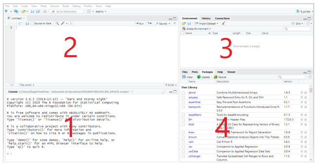

Introducció a R
1 Què és R i RStudio?
R és un entorn i llenguatge de programació enfocat a l’anàlisi estadística molt popular per l’anàlisi de dades massives. A partir de la seva versió fonamental (el que es coneix com a «R base»), qualsevol usuari pot publicar paquets que estenen aquesta configuració bàsica.
Començarem familiaritzant-nos amb l’entorn de treball R i l’integrated development environment (IDE) RStudio. Podem descarregar tots dos programes des de les següents adreces. És important fer la instal·lació en aquest ordre, primer R i després RStudio.
R: https://cran.r-project.org/bin/windows/base/
RStudio Desktop: https://posit.co/download/rstudio-desktop/
RStudio està dividit en quatre panells:
Consola (1): aquí és on R espera que li donem instruccions. Per a executar-les i obtenir el resultat premem «Intro». La primera vegada que obrim RStudio aquesta secció ocuparà tota la part esquerra de la pantalla.
Scripts (2): treballar en la consola és molt limitat ja que les instruccions s’han d’introduir una a una. És més habitual treballar amb scripts o fitxers d’instruccions que podem guardar i compartir. Per a veure aquesta secció en la pantalla cal obrir un script nou («File > New File > R Script»). Una altra opció una mica més avançada és crear fitxers RMarkdown amb codi i narrativa. Ho veurem al Tema 11.
Entorn, etc. (3) que inclou diverses pestanyes: Environment (on s’aniran registrant els objectes creats en la sessió de treball); History (es registren les instruccions executades); Connections i Tutorial.
Fitxers, etc. (4) que inclou les pestanyes: Files, Plots, Packages, Help, Viewer i Presentation. De moment, destacarem la pestanya Packages, que proporciona un llistat dels paquets disponibles en R i els que han estat carregats en la sessió. A través de les opcions d’aquesta pestanya podem instal·lar nous paquets o actualitzar els existents.
El més habitual serà treballar amb scripts en el panell 2 de la figura. Allí escriurem les funcions que volem executar. Així mateix, podem afegir comentaris que, per a diferenciar-los de les funcions, aniran precedits del signe # (per a convertir un text en comentari també és possible seleccionar-lo i prémer «Ctrl + Shift + C»). Encara que es poden executar diverses funcions d’una sola vegada, normalment executarem els scripts línia a línia. D’aquesta manera, si es produeix un error, sabrem immediatament en quina línia es troba. Per a executar una línia de codi, situem en ella el cursor i premem «Run» o «Ctrl + Intro».
Sovint utilitzarem «paquets» (libraries) que estenen la configuració bàsica de R. Per a utilitzar un paquet primer haurem d’instal·lar-lo (això ho farem una única vegada) i cridar-lo (això caldrà fer-ho cada vegada que obrim una sessió en R). És recomanable fer la crida al paquet a l’inici del script. Per exemple, aquestes són les dues ordres per instal·lar i executar el paquet tidyverse:
install.packages("tidyverse")library(tidyverse)A mesura que treballem amb R anirem acumulant fitxers (dades, scripts, resultats de les anàlisis, figures, etc.). Per a mantenir organitzada la informació, és recomanable treballar amb «projectes» (projects). Cada projecte té el seu propi directori, de manera que, en indicar un fitxer que volem utilitzar, no és necessari detallar la ruta per a accedir, sinó que R el buscarà en el directori del projecte. En el cas de projectes d’envergadura, és convenient crear subdirectoris de dades, scripts i outputs.
Per crear un projecte, cal fer servir l’opció: «File > New Project».
2 Elements bàsics de R
En la seva versió més simple, és possible utilitzar R com una calculadora. Si introduïm en la consola 2+2, R ens retorna el resultat.
2+2[1] 4En executar el codi, el resultat es mostra en la consola. No obstant això, moltes vegades serà útil guardar-ho en un objecte per a poder reutilitzar-lo. En R qualsevol cosa pot ser un objecte: una xifra, una paraula, una taula de dades, una figura, etc. Per tant, un objecte pot ser una cosa molt simple o una cosa molt complexa.
Per a crear un objecte, simplement li donem un nom i li assignem un valor usant l’operador <-
objecte_1 <- 5Acabem de crear un objecte anomenat objecte_1 i li hem assignat el valor 5. És important evitar els espais en blanc en els noms d’objectes. Generalment se substitueixen per «_» o per «.» Tampoc no podem iniciar el nom d’un objecte amb un dígit.
Ara creem un segon objecte:
objecte_2 <- "bon dia"En l’«Entorn» de RStudio podem veure els objectes creats, els seus valors i el tipus d’objecte que RStudio els ha assignat. Si assignem un nou valor a un objecte, R el substitueix sense avisar-nos pel que cal ser previngut per a evitar esborrar informació involuntàriament:
objecte_2 <- 3Ara tenim dos objectes del mateix tipus i podem combinar-los:
objecte_3 <- objecte_1 + objecte_2
objecte_3[1] 8Un altre tipus d’objecte són els vectors. Crearem un vector concatenant vuit xifres:
vector <- c(2, 3, 1, 6, 4, 3, 3, 7)Podem calcular la mitjana del vector fent servir la funció mean i guardar-la en un altre objecte:
mitjana_vector <- mean(vector)
mitjana_vector[1] 3.625Als exemples anteriors, hem vist objectes que contenen dos tipus de valors: numèrics (numeric) i caràcters (character). R considera dos tipus més d’informació: nombres sencers, sense decimals (integers) i lògics (logical) que adopten dos possibles valors: TRUE o FALSE.
Pel que fa a les estructures de dades, ja hem vist els vectors (vectors). A més, R inclou dades en matrius (matrices o arrays), llistes (lists) i dataframes. Aquest últim tipus d’estructura serà el que farem servir més sovint.
Un dataframe és un objecte bidimensional amb files i columnes. És similar a una matriu, amb la diferència que mentre la matriu només conté dades d’un tipus, els dataframes poden combinar diferents tipus de dades. Normalment, en un dataframe cada fila correspon a una observació individual i cada columna a una variable. En definitiva, un dataframe és similar a un full de càlcul en Microsoft Excel o en LibreOffice Calc.
A continuació es mostra un extracte del dataframe iris que està inclòs a la instal·lació base de R i que conté informació sobre diferents espècies de flors. Inclou dades numèriques (mesures de longitud i amplada de sèpals i pètals en centímetres) i categòriques (l’espècie):
data(iris)
head(iris)3 Ajuda dins R
Quan treballem amb R, és habitual necessitar consultar com funciona una funció concreta: quins arguments accepta, què retorna o com s’utilitza. Per a això, R inclou un sistema d’ajuda integrat molt útil. La manera més ràpida de consultar la documentació d’una funció és escriure el símbol d’interrogació seguit del nom de la funció, per exemple ?mean, o bé fer servir la funció help(), amb el mateix resultat: help(mean). En qualsevol dels dos casos, la documentació es mostrarà a la pestanya Help del panell 4 de RStudio, on trobarem una descripció de la funció, els seus arguments, el valor que retorna i, sovint, exemples pràctics d’ús que podem executar directament.
Si no recordem el nom exacte d’una funció però sabem aproximadament què volem fer, podem fer una cerca més àmplia amb ?? seguit d’una paraula clau (per exemple, ??regression), que buscarà coincidències en tots els paquets instal·lats. També és molt recomanable revisar els exemples que acompanyen cada funció d’ajuda, ja que solen incloure codi que es pot copiar i adaptar a les nostres pròpies dades. Consultar l’ajuda de manera sistemàtica és un hàbit que val la pena adquirir des del principi, ja que estalvia molt de temps i evita haver de recórrer a cerques externes per a dubtes que R ja resol internament.
4 Importació de datasets
Malgrat que és possible introduir dades directament en R (per exemple, creant vectors), el més habitual és importar-los des d’un fitxer «csv» o «txt». Quan importem dades a R, hem d’assegurar-nos que el format del fitxer coincideix amb el que la funció d’importació espera. Existeix la funció read_csv() però té l’inconvenient que assumeix un format «internacional»: la coma («,») com a separador de columnes i el punt («.») com a separador decimal. El problema és que Excel configurat en català o castellà exporta els fitxers «csv» d’una altra manera: com que la coma ja s’utilitza com a separador decimal (per exemple, «3,14»), Excel fa servir el punt i coma («;») per separar les columnes en lloc de la coma. Si intentéssim llegir aquest tipus de fitxer amb read_csv(), R no reconeixeria correctament ni les columnes ni els números.
La funció read_csv2() del paquet readr (dins del tidyverse) està pensada per a aquest escenari: llegeix fitxers on el separador de columnes és «;» i el separador decimal és «,».
En resum, la funció que cal fer servir no depèn només de l’extensió del fitxer (per exemple, «.csv»), sinó de com s’ha generat realment. Per això és una bona pràctica fer sempre una ullada ràpida al fitxer (obrint-lo com a text pla) abans de decidir quina funció d’importació utilitzar.
En el següent exemple, s’ha importat des de R un fitxer anomenat «empleats.csv» amb les dades de 56 empleats d’una empresa. Una vegada importades, les dades es guarden en un objecte anomenat «dades»:
dades <- read_csv2("data/empleats.csv")Quan les dades es troben originalment en un fitxer Excel («.xls» o «.xlsx»), no sempre cal exportar-les prèviament a format «csv» per importar-les a R. El paquet readxl, que també forma part de l’entorn tidyverse, permet llegir directament fitxers Excel mitjançant la funció read_excel(). Aquesta opció té l’avantatge d’evitar els problemes de separadors de columnes i decimals que sovint apareixen amb els fitxers «csv» (com s’ha comentat anteriorment amb read_csv() i read_csv2()), ja que read_excel() llegeix les dades directament de les cel·les del full de càlcul, sense passar per cap conversió intermèdia.
També podem importar fitxers amb l’opció «Import Dataset» de la pestanya «Environment». No obstant, verifiqueu sempre que les dades s’han important correctament, especialment si el fitxer Excel està formatat (inclou negretes, colors, etc.).
En R, els valors perduts o desconeguts es representen amb el símbol especial NA (Not Available). Aquest símbol pot aparèixer en qualsevol tipus de dada (numèrica, de caràcter o lògica) i indica que, per a aquella observació concreta, no disposem d’informació. És habitual trobar-nos amb valors NA quan importem dades reals, ja sigui perquè hi ha caselles buides en el fitxer original o perquè determinades respostes no es van registrar.
Funcions com summary() ja ens mostren quants NA conté cada variable, i és important tenir-ho en compte perquè molts càlculs bàsics, com mean(), retornaran NA si el vector conté algun valor perdut, tret que indiquem explícitament l’argument na.rm = TRUE.
5 Codificació de caràcters (encoding)
Quan importem fitxers «csv» amb accents, dièresis o la lletra «ç» (habituals en català o castellà), de vegades els caràcters especials es mostren malament un cop importats a R (per exemple, en lloc de «informació» apareix «informaci» o símbols estranys). Això sol passar perquè el fitxer s’ha guardat amb una codificació diferent de la que R espera per defecte. Per evitar-ho, podem indicar explícitament la codificació del fitxer d’origen amb l’argument locale, especificant encoding = "UTF-8" o, si el fitxer prové d’Excel en Windows, encoding = "Latin1" (o “ISO-8859-1”), que és una codificació habitual en aquest sistema. Per exemple:
dades <- read_csv2("data/empleats.csv", locale = locale(encoding = "UTF-8"))ℹ Using "','" as decimal and "'.'" as grouping mark. Use `read_delim()` for more control.Rows: 56 Columns: 13
── Column specification ────────────────────────────────────────────────────────
Delimiter: ";"
chr (5): nom, ciutat, departament, nivell_estudis, te_carnet_conduir
dbl (7): id_empleat, edat, anys_experiencia, salari_brut_anual, vendes_mens...
date (1): data_contractacio
ℹ Use `spec()` to retrieve the full column specification for this data.
ℹ Specify the column types or set `show_col_types = FALSE` to quiet this message.Si no sabem quina codificació té el fitxer, val la pena provar primer amb «UTF-8» i, si els accents segueixen sortint malament, provar amb «Latin1». En cas de dubte, també es pot obrir el fitxer com a text pla (per exemple, amb el Bloc de notes o un editor de text) i comprovar quina codificació indica el programa.
6 Funcions bàsiques d’anàlisi
Ara podem treballar amb l’objecte «dades». Podem consultar l’estructura del dataframe:
str(dades)spc_tbl_ [56 × 13] (S3: spec_tbl_df/tbl_df/tbl/data.frame)
$ id_empleat : num [1:56] 1 2 3 4 5 6 7 8 9 10 ...
$ nom : chr [1:56] "Roger Serra" "Laia Puig" "Carla Sala" "Irene Prat" ...
$ ciutat : chr [1:56] "Sabadell" "Lleida" "Tarragona" "Sabadell" ...
$ departament : chr [1:56] "Màrqueting" "Màrqueting" "Atenció al Client" "Vendes" ...
$ nivell_estudis : chr [1:56] "Grau" "Batxillerat" "Doctorat" "Doctorat" ...
$ edat : num [1:56] 23 27 22 60 26 45 46 26 56 25 ...
$ anys_experiencia : num [1:56] 0.3 3.4 0.3 16.1 3.9 5 17.1 1.1 26.9 3.2 ...
$ salari_brut_anual : num [1:56] 22690 44777 24597 54032 54468 ...
$ vendes_mensuals : num [1:56] 5 5 2 24 1 5 0 5 1 0 ...
$ satisfaccio_laboral : num [1:56] 9.2 6.8 3.7 3.6 9.1 3.5 4.6 6.2 10 5.7 ...
$ hores_teletreball_setmana: num [1:56] 0 0 2 1 2 4 0 1 0 3 ...
$ data_contractacio : Date[1:56], format: "2021-08-15" "2020-01-14" ...
$ te_carnet_conduir : chr [1:56] "No" "No" "No" "No" ...
- attr(*, "spec")=
.. cols(
.. id_empleat = col_double(),
.. nom = col_character(),
.. ciutat = col_character(),
.. departament = col_character(),
.. nivell_estudis = col_character(),
.. edat = col_double(),
.. anys_experiencia = col_double(),
.. salari_brut_anual = col_double(),
.. vendes_mensuals = col_double(),
.. satisfaccio_laboral = col_double(),
.. hores_teletreball_setmana = col_double(),
.. data_contractacio = col_date(format = ""),
.. te_carnet_conduir = col_character()
.. )
- attr(*, "problems")=<externalptr> Una altra opció:
glimpse(dades)Rows: 56
Columns: 13
$ id_empleat <dbl> 1, 2, 3, 4, 5, 6, 7, 8, 9, 10, 11, 12, 13, 1…
$ nom <chr> "Roger Serra", "Laia Puig", "Carla Sala", "I…
$ ciutat <chr> "Sabadell", "Lleida", "Tarragona", "Sabadell…
$ departament <chr> "Màrqueting", "Màrqueting", "Atenció al Clie…
$ nivell_estudis <chr> "Grau", "Batxillerat", "Doctorat", "Doctorat…
$ edat <dbl> 23, 27, 22, 60, 26, 45, 46, 26, 56, 25, 22, …
$ anys_experiencia <dbl> 0.3, 3.4, 0.3, 16.1, 3.9, 5.0, 17.1, 1.1, 26…
$ salari_brut_anual <dbl> 22689.83, 44776.71, 24597.26, 54032.17, 5446…
$ vendes_mensuals <dbl> 5, 5, 2, 24, 1, 5, 0, 5, 1, 0, 2, 12, 19, 2,…
$ satisfaccio_laboral <dbl> 9.2, 6.8, 3.7, 3.6, 9.1, 3.5, 4.6, 6.2, 10.0…
$ hores_teletreball_setmana <dbl> 0, 0, 2, 1, 2, 4, 0, 1, 0, 3, 2, 5, 0, 3, 0,…
$ data_contractacio <date> 2021-08-15, 2020-01-14, 2016-02-01, 2024-04…
$ te_carnet_conduir <chr> "No", "No", "No", "No", "No", "Sí", "No", "S…Per obtenir un resum estadístic de les dades:
summary(dades) id_empleat nom ciutat departament
Min. : 1.00 Length:56 Length:56 Length:56
1st Qu.:14.75 Class :character Class :character Class :character
Median :28.50 Mode :character Mode :character Mode :character
Mean :28.50
3rd Qu.:42.25
Max. :56.00
nivell_estudis edat anys_experiencia salari_brut_anual
Length:56 Min. :22.00 Min. : 0.000 Min. :21058
Class :character 1st Qu.:26.75 1st Qu.: 1.325 1st Qu.:31560
Mode :character Median :37.00 Median : 4.300 Median :41143
Mean :38.54 Mean : 8.746 Mean :39695
3rd Qu.:49.00 3rd Qu.:12.850 3rd Qu.:47421
Max. :60.00 Max. :29.100 Max. :60780
vendes_mensuals satisfaccio_laboral hores_teletreball_setmana
Min. : 0.000 Min. : 3.100 Min. :0.00
1st Qu.: 2.000 1st Qu.: 4.600 1st Qu.:1.00
Median : 4.000 Median : 6.250 Median :2.00
Mean : 7.018 Mean : 6.350 Mean :2.25
3rd Qu.: 5.000 3rd Qu.: 8.125 3rd Qu.:3.25
Max. :37.000 Max. :10.000 Max. :5.00
data_contractacio te_carnet_conduir
Min. :2015-01-14 Length:56
1st Qu.:2017-10-19 Class :character
Median :2021-01-26 Mode :character
Mean :2020-08-08
3rd Qu.:2023-03-20
Max. :2024-11-17 Podem obtenir un estadístic d’una variable concreta (els noms de les variables s’indiquen amb el símbol «$»), com ara la mitjana de l’edat:
mean(dades$edat)[1] 38.53571Com ja hem vist, aquesta mitjana pot guardar-se en un altre objecte per a continuar treballant amb ella:
mitjana_edat <- mean(dades$edat)Per fer un recompte de valors d’una variable:
recompte_ciutats <- table(dades$ciutat)
recompte_ciutats
Badalona Barcelona Girona Lleida Manresa Reus Sabadell Tarragona
3 4 10 5 2 2 12 9
Terrassa Vic
4 5 7 Processament de dades
Molt sovint haurem de transformar, netejar i estructurar les dades per facilitar la seva anàlisi. Un dels paquets més utilitzats per a aquestes tasques és dplyr, que forma part de l’ecosistema tidyverse. Aquest paquet proporciona diverses funcions per manipular dades en format dataframe o tibble (una estructura de dades similar al dataframe).
Per treballar amb dplyr és habitual fer servir pipes. Un pipe %>% és un operador que permet encadenar funcions. El pipe passa el resultat d’una expressió com a argument de la següent funció, evitant l’ús de parèntesis. A continuació, veurem l’ús de diverses funcions de dplyr fent servir pipes.
count(): fa recomptes de casos
dades %>% count(departament)filter(): filtra files segons una condició
dades %>% filter(departament == "Vendes")dades %>% filter(edat > 55)select(): selecciona columnes específiques
noms <- dades %>% select(nom)
head(noms)mutate(): crea o modifica columnes
dades <- mutate(dades, salari_mensual = salari_brut_anual / 12)dades.2 <- dades %>% mutate(edat_doble = edat * 2)
head(dades.2)arrange(): crea o modifica columnes
dades %>% arrange(vendes_mensuals)oLes variables qualitatives les ordena alfabèticament i les quantitatives en ordre ascendent. Si volem una ordenació descendent podem fer-ho amb arrange(desc()).
dades %>% arrange(desc(satisfaccio_laboral))group_by(): agrupa les dades segons els valors d’una o més variables
dades %>% group_by(ciutat) %>% summarise(salari_mitjà = mean(salari_brut_anual))summarise(): calcula estadístiques resum sobre un conjunt de dades
Aquestes dues últimes funcions són útils utilitzades conjuntament. Per exemple, agrupem els casos per gènere i calculem l’edat mitjana dins de cada grup.
dades %>% group_by(departament) %>% summarise(mean(edat))8 Exercici per familiaritzar-se amb R i RStudio
A continuació, es proposa un exercici per començar a treballar amb R. No cal lliurar-lo.
Instal·la R i RStudio en el teu ordinador.
Inicia RStudio. Crea un nou projecte en un nou directori («File > New Project» en el menú principal). Pots utilitzar aquest directori per a guardar les activitats del curs.
Crea un script nou dins d’aquest projecte («File > New File > R Script») i guarda’l. Consulta la pestanya “Files” (panell inferior dret) per comprovar que s’ha guardat en el directori correcte.
Explora els panells de RStudio per familiaritzar-te amb les diferents pestanyes.
En l’editor de scripts, escriu help(“mean”) i executa l’ordre («Run»). Observa que el text d’ajuda s’obre en una pestanya del panell inferior dret. Examina les parts del text d’ajuda i els exemples del final.
Crea una variable anomenada «primer_num» i assigna-li el valor 12 usant l’operador
<-. A continuació, crea una altra variable anomenada «primer_text» i assigna-li el valor “aquest és el meu primer text”. Comprova en la pestanya Environment que s’han creat correctament.Assigna el valor “el meu segon text” a la variable «primer_text». Observa què ocorre en Environment. Per a mostrar el valor de les variables introdueix el seu nom en la consola.
Importa el dataset de mostra que hem fet servir a l’explicació (està disponible al Campus Virtual).
Instal·la i executa el paquet
tidyverse. Fes un recompte de quantes persones tenen com a favorit cadascun dels colors en el dataset. A continuació, calcula la mitjana de pes dels homes i dones del dataset.No oblidis guardar el teu script. Si vols, pots tancar el teu projecte seleccionant «File > Close Project». No obstant això, no és obligatori que ho facis. Si no ho fas, la pròxima vegada que obris R Studio tornaràs a estar en aquest mateix projecte.